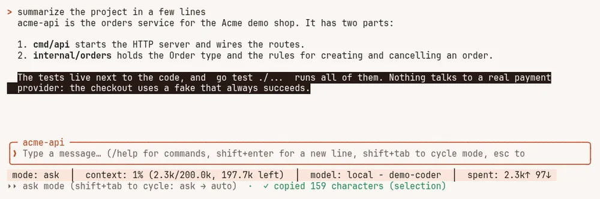
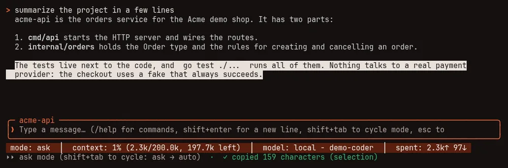
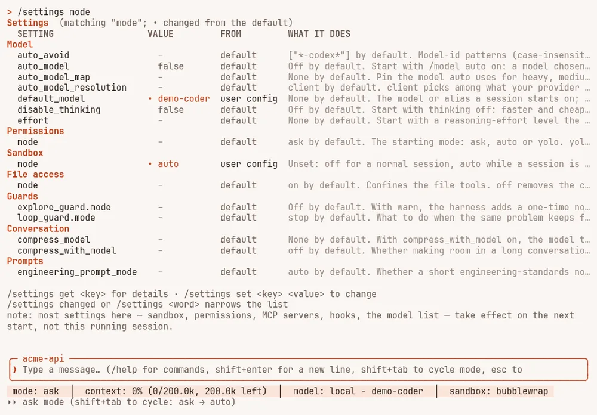
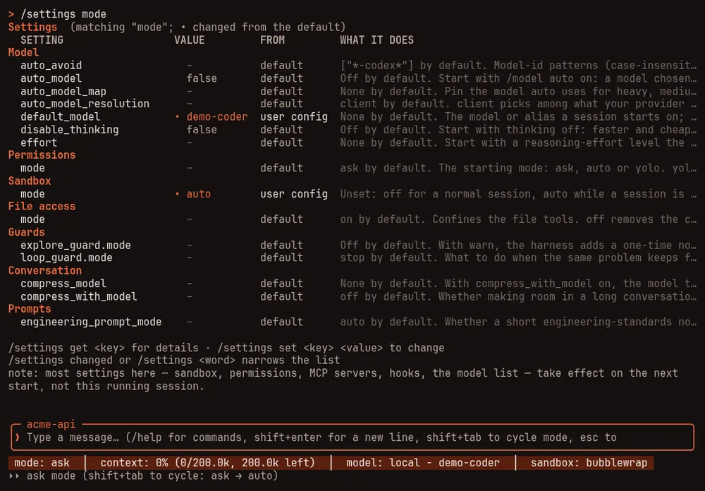

Commands and keys #
On this page
Everything you can type in a session, the keys, the modes, and the commands you run from a shell. For the
settings in config.yaml, see Harness settings; for the proxy, see
Proxy settings.
Each item has a Helps tag, because each exists to serve one or more of three goals:
- Efficient: fewer tokens or AI units for the same work.
- Efficacious: the work stays as good, and the safe choice is the default.
- Effective: whole tasks succeed: the right model, and waste stopped before it grows.
A tag appears only where it is true. Nothing here is a promise about your bill: measure your own tasks.
Modes and keys #
Permission modes decide what happens when the model wants to write a file or run a command.
| Mode | What happens | Helps |
|---|---|---|
ask (default) | You are asked before each write or command. deny rules are absolute | Efficacious |
auto | Writes and commands run without asking; deny rules still apply. Unlike yolo, it can be chosen with Shift+Tab or set in config.yaml | Effective |
yolo | Every question is answered yes. deny rules and the sandbox still apply. It exists only when you start with --yolo; a config file can never turn it on | Effective (in a disposable place only) |
plan (/plan) | Read-only: the model can look but not change, and its answer is a plan | Efficacious |
| Key | What it does |
|---|---|
/ then type | Opens completion over built-in commands, your commands and your skills. Tab fills, ↑/↓ move, Enter runs |
Enter | Sends the message; while the model is busy, queues it |
Shift+Enter | A new line in the message box (Alt+Enter and Ctrl+J also work) |
Shift+Tab | Cycles mode: ask then auto (and yolo only when launched with --yolo) |
Esc | Interrupts the running turn, or clears the input when idle |
Ctrl-C | Clears the input; interrupts a turn; quits on a second press. With text selected and nothing running, it copies the selection instead of offering to quit |
y n a | Answers a tool approval (a = always, for this session) |
| Mouse wheel | Scrolls the transcript at any time: while the model works, while an approval or a list is open, and inside a subagent's transcript |
↑ ↓ | Scroll the transcript while the message box is empty or an approval is waiting |
PgUp PgDn | Scroll a page, at any time. Ctrl+End jumps back to the bottom |
Ctrl+O | Expand or fold every long tool output |
| Click | On a folded tool result, or on the tool call above it, opens just that one; click it again (or its "click to fold" line) to fold it. On a row of the agents tray, opens that subagent |
| Drag | Selects text in the transcript, and letting go copies it. Dragging past the top or bottom scrolls. A double click selects a word, a triple click a line. The highlight stays until the next click or key |
Ctrl+Y | Copies the selected text; with nothing selected, the entry you last clicked; otherwise the last answer, as the Markdown the model wrote |
Shift+drag | Your terminal's own selection, even while the mouse is captured (Option+drag in iTerm2). Copy it with your terminal's key, such as Ctrl+Shift+C or Cmd+C |
Ctrl+V | Pastes text, or a picture on the clipboard (macOS; Linux with wl-clipboard or xclip installed), which is saved under .mapleharness/pasted/ and its path put in your message |
| Drop a file | Dropping files on the terminal window puts their paths in your message; pictures (png, jpeg, gif, webp) are also attached, so the model sees them with your next message |
Ctrl+T | Move into the agents tray (below) |
The message box and the status bar stay on the same rows whatever appears above them (an approval question, the agents tray, a list to choose from).
Copying. Drag to select and it's copied; Ctrl+Y or /copy copies the last answer. Nothing else needs
learning. A copy goes to the clipboard two ways at once: through your terminal, which also works over SSH, and
through wl-copy, xclip, xsel or pbcopy when one is installed. A terminal only takes the first if it lets
programs set the clipboard; some ask you to turn that on. Inside tmux, add set -g set-clipboard on to your tmux
configuration (or set -g allow-passthrough on). Through the terminal, a copy is cut at about 74 kB; the line
under the status bar and the transcript say when that happens, and an installed clipboard program still gets all
of it. A selection is copied as the transcript shows it, without the transcript's left margin: a long line the
window wrapped is copied as separate lines, so use Ctrl+Y or /copy for an answer's exact text. To start with
the mouse off, set mouse: false (configuration); /mouse on turns it on.


The message box is never disabled: type while the model works and your messages queue and run in order. Built-in commands still run immediately. Efficient: you can correct course early without waiting for a turn to finish.
Slash commands #
Session #
| Command | What it does | Helps |
|---|---|---|
/help | Shows the commands and keys | |
/clear | Starts over: clears the screen and the conversation. Memory notes are kept | Efficient |
/quit, /exit | Exit | |
/sessions | Lists saved sessions. Resume one with --session <name> | Effective |
/fork [n] | Copies the first n messages of this conversation, and only the stored history that belongs to them, into a new session, leaving this one untouched — bare /fork copies up to and including your last message, so "try that again, differently" needs no argument. It does not switch this view to the fork; resume it with --session <name> | Effective |
/export | Writes this conversation to a file (default jsonl) named after the session, in the working directory. Obvious secrets are redacted, but review it before sharing | Effective |
/tree | Saved points inside this conversation. Bare /tree or /tree list shows them; save marks the current point (with a model's one-line summary only when compress_with_model allows one); fork starts a new session from a saved point, never the running one — the same safe mechanism /fork uses | Effective |
/clone [name] | Copies this conversation and its saved branches into a new session, leaving this one untouched. Unlike /fork, nothing is truncated: it is "keep going from here, in parallel," not "go back and retry" | Effective |
/share | Uploads this conversation as a private GitHub gist, via the gh CLI (needs gh auth login once). Nothing is uploaded until you type /share confirm — a private gist is still visible to anyone with its link, so review it first, the same as /export | |
/btw | Asks a side question without interrupting the running turn: no tools, and no shared history | Efficient |
/copy | Copies the last answer to the clipboard, as the Markdown the model wrote. /copy code copies the last code block of the newest answer that has one, and /copy code 2 its second (counting from the top) | Efficient |
/mouse | Without an argument, says whether the mouse is captured. /mouse off hands the mouse to your terminal, so it selects and copies text itself; /mouse on takes it back for scrolling, clicks and drag-to-copy. The line under the status bar says when it is off | |
/theme [name] | Lists or switches colour themes, grouped dark / light / colour-vision-deficiency-friendly (full list: configuration). /theme auto follows your Omarchy desktop theme and keeps following it live; any other name stops following. The choice is saved as theme in your config.yaml, so the next session opens with it; only that line changes, and your comments and other settings stay as they are |
Models and effort #
| Command | What it does | Helps |
|---|---|---|
/model | Opens a list of the models the proxy serves. Bare /model also shows what automatic choice would use for each kind of work | Effective |
/model | Switches straight to that model or alias | Effective |
/model auto | Chooses a model per message from what your provider serves, within your current provider, keeping your model when it fits. It says what it chose and why; /model fixed takes the choice back | Efficient, Effective |
/effort | How hard the model thinks. Bare /effort lists the levels this model accepts; default returns to the model's own | Efficient, Effective |
/thinking | Turns thinking off or on, or sets a token budget for models that take one | Efficient |
/disable-thinking, /enable-thinking | Shorthands for thinking off and on | Efficient |
/plan [on|off], /plan-mode | Plan mode: read-only, and the answer is a plan. Pairs well with /model auto | Efficacious |
/mode [name], /yolo on|off | Cycles the permission mode, or switches to ask, auto or yolo (yolo needs --yolo at start-up) | Efficacious |
Context and cost #
| Command | What it does | Helps |
|---|---|---|
/context | What the model can see: memory notes, the project index, the tools it is offered, the window used, and what the session has spent | Efficient |
/cost | What the session has spent: totals, the last requests with their cache hit rate (and where a model change or a low hit rate lost the cache), retries, where the input goes, and which of the tool results still in the conversation have cost the most by being sent again and again. See What /cost tells you | Efficient |
/savings | What the harness's own techniques saved and cost this session. Every figure is marked measured or estimated, costs are counted, and the net can be negative | Efficient |
/settings, /configuration, /config | Every harness.* setting in a table grouped by area (Sandbox, Permissions, Theme & display, and so on): its effective value, where it comes from (default, user config or project config) and what it does. A value you changed is highlighted and marked •; a list shows how many entries it has. /settings changed shows only what differs from the default; /settings <word> shows one group, or the settings whose name contains the word (/settings sandbox). /settings get <key> shows one setting in full; /settings set <key> <value> changes one and saves it to your global config.yaml. The three names are the same command. See Per-project overrides | |
/compress | Makes room now: older messages are stored and stay searchable, and a record of the work takes their place. By default no model is asked, so it costs nothing; a model's summary is added only when compress_with_model allows one. Esc stops it. See Long conversations | Efficient, Effective |
/look, /image | Attaches a png, jpeg, webp, gif or pdf so the model can see it, not just its path. It rides with your next message | Effective |


/settings mode: the settings whose name contains "mode", grouped by area; changed values are marked with a dot.Memory, project and tools #
| Command | What it does | Helps |
|---|---|---|
/memory | The agent's notes about the project and you | Effective |
/graph | Queries and rebuilds the project index of notes and code symbols the harness looks things up in | Efficient |
/jobs | Lists background commands started with run_in_background | Effective |
/mcp | The connected MCP servers and the tools each provides | Effective |
/lsp | Language servers: detected, running, or missing, with the install command for each missing one | Effective, Efficacious |
/ledger | The checklist kept for a large request: items are checked before they are called done. Needs ledger: auto | Effective |
/proxy | Where the proxy is, whether it answers, and where its log is. /proxy start, /proxy stop and /proxy restart control it (other harnesses share it); /proxy logs [lines] shows the end of the log of a proxy the harness started, when proxy_logs is on | Effective |
Memory notes. The model saves a note with the remember tool by giving a kind (project, user, feedback or
reference), a one-line title and the fact, and optionally why it matters, how to apply it, and a few tags. The harness
writes every note in the same shape, so notes read the same whichever model wrote them, and they stay plain Markdown you
can open and edit. Saying the same thing again updates the existing note instead of adding a copy, and an empty or
oversized note is refused with the reason. Notes written by earlier versions still load. Project notes the model writes
live in the project's .mapleharness/memory folder, which is not committed. The notes the harness writes on its own
(the session-progress note at the end of a session, and the test and build commands it saves) live in your Maple
Harness config folder under notes/<project>/, never inside the project; notes it wrote in the project folder before
are moved there the next time a session starts. recall shows both kinds. The harness does not read or write project
notes through a symbolic link: if .mapleharness or .mapleharness/memory is a link, the model's project notes are
not used, and a note file that is a link is replaced when written, never written through.
Session journal. After every turn the harness itself, not the model, records what the turn did: the files read and
changed, the commands run and whether they passed, failed tool calls, and the model used. It is kept per session in
your Maple Harness config folder, in a folder for each project (never inside the project itself), stays small (older
sessions are removed), and passes through the same redaction as the rest of the harness. sessions rm removes a
session's journal with it, and cleanup removes journals whose session is gone. The model can read this session's journal with recall and journal: true. When a test or
build command has passed several times across different turns of this session, the harness saves it as a project memory
note so the next session knows how to check its work. Only the plain command is saved: no environment variables in front
of it, nothing chained after it, no redirections, and nothing at all if it carries something that looks like a
credential. It never overwrites a note the model or you wrote, and it saves nothing that needs judgement. What a
subagent reads, changes and runs goes in the same journal, marked with the subagent's name; memory notes are saved from
your own session's commands only.
Project index. Files the model writes or edits are re-indexed in the background shortly after each turn, only those
files, so the index stays current during a session without slowing it down. Files changed some other way — a command, a
subagent, your editor — are found after each turn too, recorded in the journal as changed from outside, and re-indexed
the same way. Test files (_test.go) and build files such as go.mod and Makefile are recorded in the journal too,
though the index leaves them out.
Search by meaning. With a model for it set up in the proxy, history_search, recall and graph_search also rank
results by what they mean, combined with the words they share, and recall gains a query argument. Without one they
work exactly as before. See Search by meaning.
Switching model mid-conversation. The first message on the new model carries one short note saying which model held
the conversation, and that memory, the journal, history_search and the code index already hold what it would otherwise
re-read. A switch back to a model that has already had the note gets a single line.
Safety #
| Command | What it does | Helps |
|---|---|---|
/sandbox | How the bash tool is contained: the mode, the backend, what is writable and hidden. See The shell sandbox | Efficacious |
/sandbox auto, /sandbox, /sandbox off | Contains commands when a backend is available; refuses to run them without one; or no containment for this session | Efficacious |
/sandbox, /sandbox | Lets contained commands reach the network, or cuts it | Efficacious |
/sandbox | Lets contained commands read a hidden path for this session; --write makes it writable; --save keeps it in config.yaml. See The shell sandbox | Efficacious |
Agents #
| Command | What it does | Helps |
|---|---|---|
/agents | Manage subagents: list, view, create, edit, delete | Effective |
/agent, @name | Runs a subagent on a task | Efficient, Effective |
Remote and notifications #
| Command | What it does | Helps |
|---|---|---|
/remote | Shares this session with a phone or another Maple Harness. See Control it from your phone | Effective |
/remote pair | Opens a list of addresses, then makes a short pairing code and one QR for the address you pick. --via, --token and --fixed change what it makes; --watch-only makes a device that can watch but not drive; --no-start refuses to start the gateway if none is running | Effective |
/remote status, /remote | Where remote control is listening, and the devices that have a token | Efficacious |
/remote, /remote shares, /remote | Makes a link that lets one person watch this session live, read-only, until it ends (24 hours unless you choose); with --drive, a link that can also send messages and answer approvals in this session (8 hours unless you choose; it explains what that allows and asks you to repeat it with --confirm); lists this session's shares; stops one. See Sharing one session | Efficacious |
/remote, /remote off | Removes one device's token (it stops at once), or stops sharing | Efficacious |
/remote local, /remote | Shares on this machine only (through an SSH tunnel), or serves a real certificate for your tailnet name | Efficacious |
See Control it from your phone for the whole flow.
Agents and the agents tray #
Subagents are helper agents you define in .claude/agents/<name>.md (or ~/.claude/agents), or use from the
built-in set. The model can hand them jobs, and you can run one yourself with @name <task> (Tab completes the
name). While any run, a tray sits just above the message box:
- a
mainrow and one row per subagent, with a status mark, its name, what it is doing, elapsed time and tokens; ↓from an empty message box, orCtrl+T, moves into it;↑/↓move between rows;Enter, or a click on its row, opens that subagent's live transcript (read-only); the wheel andPgUp/PgDnscroll it;Esc,Enter,q,b,←,Backspaceor a click leaves it;xthenystops the selected subagent;ccollapses the tray to "N agents" on the status line.
Efficient: a subagent's long searches and tool output stay out of the main conversation, so the main conversation stays short. See Subagents.
Your own commands and skills #
.claude/commands/<name>.mdbecomes/name(with$ARGUMENTS, or$1to$9, substituted)..claude/skills/<name>/SKILL.mdbecomes a skill, callable with/nameor chosen by the model.
Built-in commands always win over a command or skill with the same name. Effective: your team's routines are one keystroke away.
Commands you run from a shell #
maple-harness with no command starts the full-screen interface. The short name is mpl.
On a terminal, commands that print lists or status use tables and your theme's colours, fitted to the window. Piped
into another program or a file, the output is plain text with no colour codes and no cut-off cells.
--no-color or the NO_COLOR environment variable turns colour off, and --json output never has colour.
| Command | What it does | Helps |
|---|---|---|
maple-harness | Sign in to github-copilot or anthropic through the proxy | Effective |
maple-harness | Work with saved sessions. rm also removes the session's stored history and journal, and a stored history left without its session. sessions prune is the same as cleanup | Effective |
maple-harness | Forks the latest session in this directory into a new one, up to and including its last user message (or the first n messages, given), with only the stored history that belongs to those messages | Effective |
maple-harness | Writes a saved session's transcript to a file (default: <name>.jsonl in the working directory). Obvious secrets are redacted, but review it before sharing | Effective |
maple-harness | Lists a saved session's branches, or forks one into a new session. save is TUI-only — it needs a live conversation to summarise | Effective |
maple-harness | Copies a saved session's messages and branches into a new one, leaving the original untouched | Effective |
maple-harness | Uploads a saved session's transcript as a private GitHub gist, after asking yes/no on the terminal | |
maple-harness | Shows saved sessions and project indexes that can go, stored histories and journals whose session is gone, and temporary files an interrupted save left behind (older than an hour); removes them only with --yes. --older-than, --keep, --sessions, --graphs, --declines (forget which models declined tasks), --json | Efficient |
maple-harness | Checks the setup and says what is wrong and what to do. --fix repairs what is safe, --json prints the report, --report FILE writes a redacted bundle to attach to a bug report, --online also checks the update feed | Efficacious |
maple-harness | A project's own hooks and MCP-server files ask before running the first time; manage that decision directly instead of waiting to be asked. list --json for a machine-readable form | Effective |
maple-harness | Replays the same tasks under different settings, several times each, and compares them task by task with the uncertainty shown. Nothing is spent without --yes and a budget. See Measure with bench | Efficient, Effective |
maple-harness | The proxy's savings account in a terminal (--json, --addr); the same as the setup page's Savings card | Efficient |
maple-harness | Inspect and rebuild this project's index | Efficient |
maple-harness | Serves this project's notes and index to any tool that speaks MCP. Off this machine it needs an access token and TLS. See Give other tools this project's knowledge | Effective |
maple-harness | Runs a session with no terminal and lets another device drive it. See Control it from your phone | Effective |
maple-harness | Opens your usual interface on a session running somewhere else. --token-file, --fingerprint and --session | Effective |
maple-harness | The one remote-control address on this machine. workspaces add|rm|list chooses the folders a phone may start sessions in | Effective |
maple-harness | Sends a test message to your notification destinations, or shows what is configured | Effective |
maple-harness | Keeps the proxy and the gateway running in the background. See Keep it running in the background | Effective |
maple-harness | Installs a newer release. --check reports only | |
maple-harness, maple-harness | The version, and the licences of the software inside the program | |
maple-harness | Prints a detection manifest for Use it with herdr (advanced) |
Command-line flags #
| Flag | What it does |
|---|---|
--prompt | Runs one turn and exits, printing the answer. Everything else goes to the error stream, so > out.txt captures just the answer |
--json-summary | With --prompt: writes a machine-readable summary of the run (tokens, cache figures, AI units, tool calls, why it stopped) |
--continue, --resume, --session NAME | Resume the most recent session here, pick one to resume, or use a named session |
--config PATH | Use a specific config.yaml |
--yolo | Allow yolo mode (see above) |
--repl | Use the plain line-based interface instead of the full-screen one |
--rpc | Read newline-delimited JSON commands from stdin and write newline-delimited JSON events to stdout, for scripting and IDE integration. See Drive it from another program |
--remote | Also let another device drive this session. --remote-listen, --remote-tls, --remote-allow-host and --remote-insecure-http set how |
A run started with --prompt that is stopped because the same problem kept failing exits with status 3, and says
what it tried.